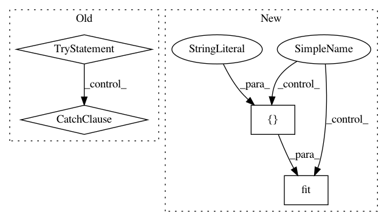

019f0c822cd8f2833d3b25855f2df99cd5a465a4,auto_ml/utils_model_training.py,FinalModelATC,fit,#FinalModelATC#Any#Any#,57
Before Change
if self.model_name in ["LGBMClassifier", "LGBMRegressor"]:
X_fit = X.toarray()
try:
if self.model_name[:12] == "DeepLearning":
print("\nWe will stop training early if we have not seen an improvement in training accuracy in 25 epochs")
from keras.callbacks import EarlyStopping
early_stopping = EarlyStopping(monitor="loss", patience=25, verbose=1)
self.model.fit(X_fit, y, callbacks=[early_stopping])
elif self.model_name[:4] == "LGBM":
X_fit, X_test, y, y_test = train_test_split(X_fit, y, test_size=0.15)
if self.type_of_estimator == "regressor":
eval_metric = "rmse"
elif self.type_of_estimator == "classifier":
if len(set(y_test)) > 2:
eval_metric = "multi_logloss"
else:
eval_metric = "binary_logloss"
cat_feature_indices = self.get_categorical_feature_indices()
self.model.fit(X_fit, y, eval_set=[(X_test, y_test)], early_stopping_rounds=50, eval_metric=eval_metric, eval_names=["random_holdout_set_from_training_data"], categorical_feature=cat_feature_indices)
elif self.model_name[:8] == "CatBoost":
X_fit = X_fit.toarray()
if self.type_of_estimator == "classifier" and len(pd.Series(y).unique()) > 2:
// TODO: we might have to modify the format of the y values, converting them all to ints, then back again (sklearn has a useful inverse_transform on some preprocessing classes)
self.model.set_params(loss_function="MultiClass")
cat_feature_indices = self.get_categorical_feature_indices()
self.model.fit(X_fit, y, cat_features=cat_feature_indices)
elif self.model_name[:16] == "GradientBoosting":
if scipy.sparse.issparse(X_fit):
X_fit = X_fit.todense()
patience = 20
best_val_loss = -10000000000
num_worse_rounds = 0
best_model = deepcopy(self.model)
X_fit, X_test, y, y_test = train_test_split(X_fit, y, test_size=0.15)
// Add a variable number of trees each time, depending how far into the process we are
if os.environ.get("is_test_suite", False) == "True":
num_iters = list(range(1, 50, 1)) + list(range(50, 100, 2)) + list(range(100, 250, 3))
else:
num_iters = list(range(1, 50, 1)) + list(range(50, 100, 2)) + list(range(100, 250, 3)) + list(range(250, 500, 5)) + list(range(500, 1000, 10)) + list(range(1000, 2000, 20)) + list(range(2000, 10000, 100))
try:
for num_iter in num_iters:
warm_start = True
if num_iter == 1:
warm_start = False
self.model.set_params(n_estimators=num_iter, warm_start=warm_start)
self.model.fit(X_fit, y)
if self.training_prediction_intervals == True:
val_loss = self.model.score(X_test, y_test)
else:
try:
val_loss = self._scorer.score(self, X_test, y_test)
except Exception as e:
val_loss = self.model.score(X_test, y_test)
if val_loss - self.min_step_improvement > best_val_loss:
best_val_loss = val_loss
num_worse_rounds = 0
best_model = deepcopy(self.model)
else:
num_worse_rounds += 1
print("[" + str(num_iter) + "] random_holdout_set_from_training_data\"s score is: " + str(round(val_loss, 3)))
if num_worse_rounds >= patience:
break
except KeyboardInterrupt:
print("Heard KeyboardInterrupt. Stopping training, and using the best checkpointed GradientBoosting model")
pass
self.model = best_model
print("The number of estimators that were the best for this training dataset: " + str(self.model.get_params()["n_estimators"]))
print("The best score on a random 15 percent holdout set of the training data: " + str(best_val_loss))
else:
self.model.fit(X_fit, y)
except TypeError as e:
if scipy.sparse.issparse(X_fit):
X_fit = X_fit.todense()
self.model.fit(X_fit, y)
except KeyboardInterrupt as e:
print("Stopping training at this point because we heard a KeyboardInterrupt")
print("If the model is functional at this point, we will output the model in its latest form")
print("Note that not all models can be interrupted and still used, and that this feature generally is an unofficial beta-release feature that is known to fail on occasion")
pass
return self
def remove_categorical_values(self, features):
clean_features = set([])
After Change
cat_feature_indices = self.get_categorical_feature_indices()
if cat_feature_indices is None:
self.model.fit(X_fit, y, eval_set=[(X_test, y_test)], early_stopping_rounds=50, eval_metric=eval_metric, eval_names=["random_holdout_set_from_training_data"])
else:
self.model.fit(X_fit, y, eval_set=[(X_test, y_test)], early_stopping_rounds=50, eval_metric=eval_metric, eval_names=["random_holdout_set_from_training_data"], categorical_feature=cat_feature_indices)
In pattern: SUPERPATTERN
Frequency: 3
Non-data size: 4
Instances
Project Name: ClimbsRocks/auto_ml
Commit Name: 019f0c822cd8f2833d3b25855f2df99cd5a465a4
Time: 2017-08-17
Author: ClimbsBytes@gmail.com
File Name: auto_ml/utils_model_training.py
Class Name: FinalModelATC
Method Name: fit
Project Name: scikit-learn/scikit-learn
Commit Name: 9b39c4c4d20eef7a2b0b8420945f09d3731e1b67
Time: 2020-02-16
Author: sci@feldbauer.org
File Name: sklearn/feature_extraction/tests/test_text.py
Class Name:
Method Name: test_countvectorizer_custom_vocabulary_gap_index
Project Name: scikit-learn/scikit-learn
Commit Name: 9b39c4c4d20eef7a2b0b8420945f09d3731e1b67
Time: 2020-02-16
Author: sci@feldbauer.org
File Name: sklearn/feature_extraction/tests/test_text.py
Class Name:
Method Name: test_countvectorizer_custom_vocabulary_repeated_indices